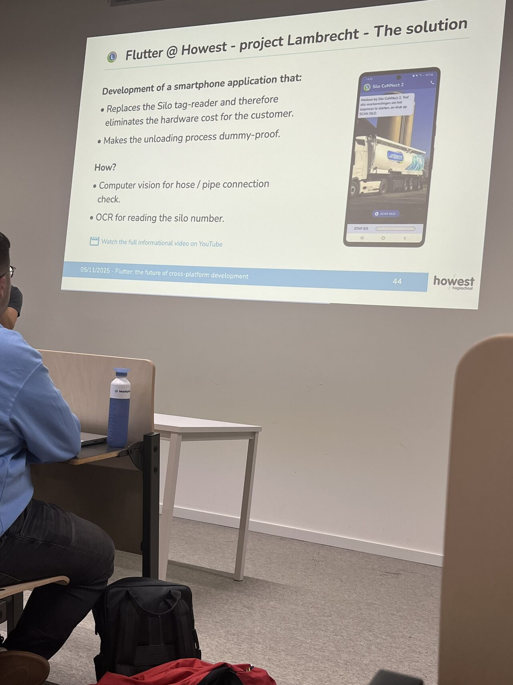

Event type: Tech & Meet
Speaker: Thijs Pirmez
Topic: Flutter and cross-platform development

I attended a Tech & Meet session about Flutter, presented by Thijs Pirmez, a self-taught developer with a strong passion for the framework. The session was an interesting introduction to Flutter and helped me understand why it has become popular among developers building applications across different platforms.
One of the main points I learned was that Flutter is not limited to mobile development. It can also be used for web, desktop and embedded systems. This makes it a flexible framework for developers who want to create applications that work across several environments. I also learned that Flutter is designed with performance in mind, supporting smooth interfaces that can run at 60fps and even up to 120fps.
Another important concept from the session was that everything in Flutter is a widget. The speaker explained the difference between stateless and stateful widgets, which helped me understand how Flutter structures user interfaces and manages changes on screen.
Although software development is not my main specialisation, this session was valuable because cybersecurity professionals also need to understand how applications are built. Knowing more about application frameworks helps me better understand the environments I may need to secure in the future.
Overall, I found the session engaging and useful. It reminded me of the importance of exploring technologies outside my comfort zone and staying curious as part of lifelong learning.